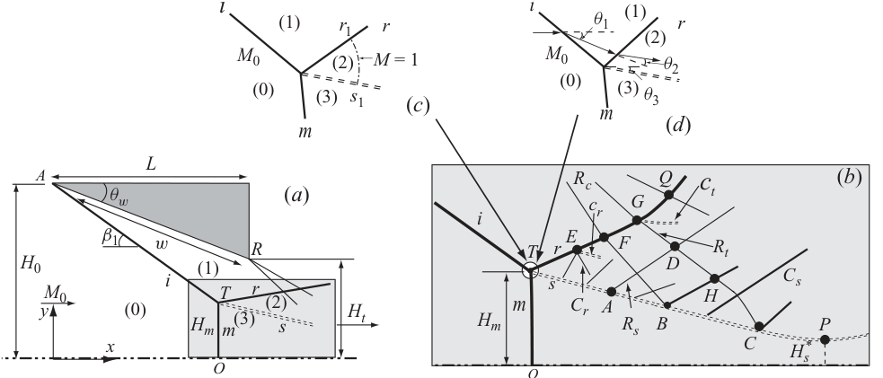
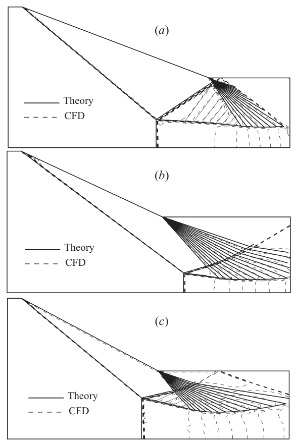
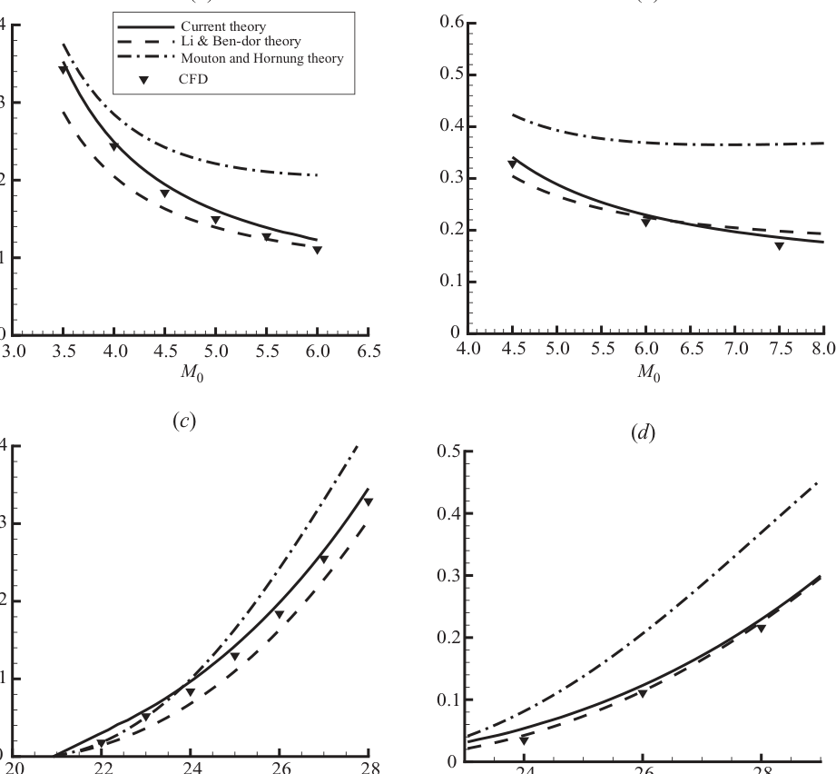
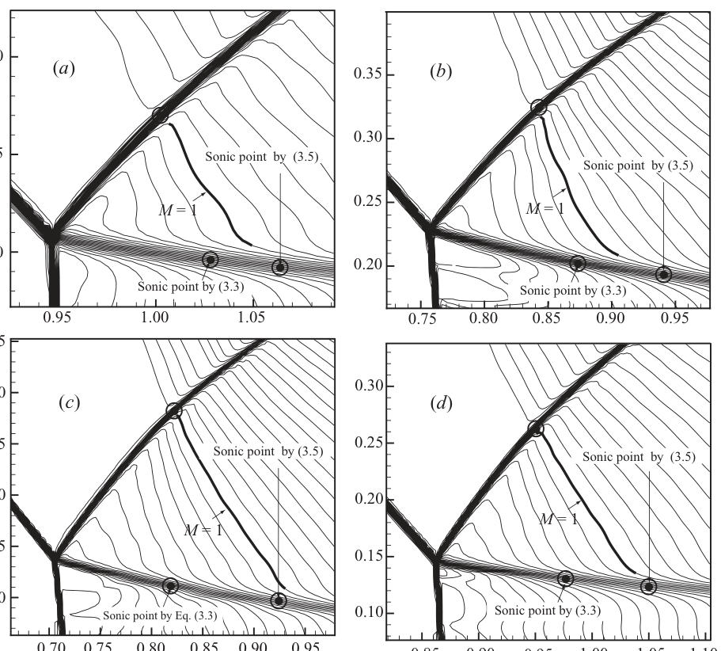

01中文摘要
研究定常二维超声速马赫反射中滑移线上产生的波系及其与其他波系的相互作用。发现即使紧邻反射激波前段、过去被视为均匀流的区域，滑移线上也存在一系列膨胀波和压缩波；这些波使原本认为平直的滑移线前段向反射面非线性偏转。上角点膨胀波经反射激波透射后首次与滑移线相交处形成拐点，其下游滑移线上产生压缩波。计入这些膨胀/压缩波的相互作用后，得到马赫杆高度以及滑移线、反射激波的形状和位置，与CFD结果吻合良好。文中还简要讨论反射激波后存在亚声速区的情形，并用简单分析确定声速线起点；该起点似与上角膨胀扇首道马赫波透射后的位置一致。
原始摘要（英文/原文）
In this paper we study the waves generated over the slipline and their interactions with other waves for Mach reflection in steady two-dimensional supersonic flow. We find that a series of expansion and compression waves exist over the slip line, even in the region immediately behind the leading part of the reflected shock wave, previously regarded as a uniform flow. These waves make the leading part of the slipline, previously regarded as straight, deviate nonlinearly towards the reflecting surface. When the transmitted expansion waves from the upper corner first intersect the slipline, an inflexion point is produced. Downstream of this inflexion point, compression waves are produced over the slipline. By considering the interaction between the various expansion or compression waves, we obtain a Mach stem height, the shape and position of the slipline and reflected shock wave, compared well to computational fluid dynamics (CFD) results. We also briefly consider the case with a subsonic portion behind the reflected shock wave. The global flow pattern is obtained through CFD and the starting point of the sonic line is identified through a simple analysis. The sonic line appears to coincide with the first Mach wave from the upper corner expansion fan after transmitted from the reflected shock wave.
02阅读说明
理论分析+CFD 的定常二维超声速马赫反射研究（非粘性为主，附 CFD 对照）。全文 22 页、16 项抓图，正文与公式完整；式(2.1)–(3.5) 已用原 PDF 第 35–37、46–47 页核对。图件清晰；Table 1 的“CFD/Theory”列标题排版略含混，已结合正文与 Fig. 4 的 CFD 值校正。信息完整度高；M2<1 只做流场诊断，未给全局马赫杆高度算法。 文章类型：期刊
03一句话核心与三句话摘要
CFD揭示马赫反射滑移线非直线，滑移线上的膨胀/压缩波控制滑移线、反射激波与马赫杆高度。
- 既有马赫反射模型多假定反射激波后为均匀流、滑移线为直线，所得马赫杆高度相对 CFD 偏大或偏小，且未研究滑移线与反射激波形状。 AI概括
- 作者先用精细 CFD 显示滑移线上存在一系列膨胀/压缩波，再用三激波理论、准一维管流、Prandtl–Meyer 关系与 Mach 波追踪建立全局迭代算法，预测滑移线、反射激波形状与马赫杆高度。 AI概括
- 计算表明滑移线先凸后凹、在首道透射膨胀波处出现拐点 B，反射激波在 F 点后上偏、在 Q 点后重新变直；所得 Hm/H0 多数工况比 Li–Ben-Dor 与 Mouton–Hornung 更接近 CFD，M2<1 时声速线近似与首道透射膨胀波重合。 AI概括
04核心内容清单
| 要点 | 类型 | 重要性 | 原文依据 | 属性 |
|---|---|---|---|---|
| 研究定常二维超声速马赫反射的波系结构，重点是滑移线上产生的膨胀/压缩波及其与其它波的相互作用。 | 研究定位 | A | p29 摘要；p31 §1 | 原文明确 |
| CFD 显示反射激波前缘后流动并非均匀，与既有模型的核心假设相反。 | 关键现象 | A | p32–34，Fig. 5 | 原文明确 |
| 滑移线下方流管收缩导致压力下降，从而在滑移线上方产生膨胀波，滑移线向反射面偏转。 | 机制 | A | p34，§2.1 | 原文明确 |
| 滑移线先凸后凹，在首道透射 Mach 波交点 B 出现拐点，二阶导数由负突变到正，至 P 点变为水平。 | 滑移线形状 | A | p41，Fig. 11 | 原文明确 |
| 反射激波在 F 点前为直线，F 点后减弱并上偏，至 Q 点后重新变直。 | 反射激波形状 | A | p41–42，Fig. 13 | 原文明确 |
| 理论给出的滑移线压力梯度均值与 CFD 一致，差异主要来自 CFD 中 KH 不稳定引起的滑移线振荡。 | 验证/差异来源 | B | p41，Fig. 12 | 原文明确 |
| 全局算法以三激波理论、准一维管流、Prandtl–Meyer 与激波关系逐波推进，并以声速喉道面积条件迭代 Hm。 | 方法 | A | p38–39，§2.2.5，式(2.22) | 原文明确 |
| 六个工况的 Hm/H0：本文理论普遍比 Li–Ben-Dor 与 Mouton–Hornung 更接近 CFD，但整体略高估。 | 定量结果 | A | p43，Table 1 | 原文明确 |
| Hm 在 von Neumann 转变点为零，随 M0 与 θw 增大；反射激波触及楔面时 MR 失稳，故存在最大楔角。 | 参数趋势/稳定性 | A | p43–44，Fig. 16 | 原文明确 |
| M2<1 时出现声速线；其位置近似与首道透射膨胀波重合，而非垂直于滑移线。 | M2<1 结构 | A | p46–47，Fig. 18 | 原文明确 |
| M2<1 的声速点可由准一维式(3.3) 或 Tan 等小扰动速度场式(3.5) 预测，二者均接近 CFD。 | 定量验证 | B | p47，式(3.3)、(3.5)，Fig. 18 | 原文明确 |
| 模型忽略滑移线卷起、寄生波、Cr 反射波与二次滑移线 ct，且 M2<1 无全局 Hm 算法。 | 局限 | A | p38–39、p46–48 | 原文明确 |
05引言：研究问题与领域缺口
【原文明确】斜激波在水平面上的反射分为规则反射（RR）与马赫反射（MR）；MR 由三波点 T 连接入射激波 i、反射激波 r、马赫杆 m 与滑移线 s（p29–30，Fig. 1）。von Neumann 三激波理论给出 RR→MR 的脱体判据与力学平衡判据，两者之间为双解区（p29）。已有马赫杆高度模型：Azevedo–Liu（1993）假定声速喉道位于膨胀扇首道 Mach 波与滑移线交点，把亚声速袋当准一维等熵收缩流、滑移线当直线；Li–Ben-Dor（1997）把声速喉道下移并允许激波/滑移线微弯；Mouton–Hornung（2007）用直线段几何关系预测过渡期增长（p30–31）。【原文明确】作者指出三个未解决问题：已有模型给出的 Hm 相对 CFD 偏大或偏小；CFD 显示反射激波前缘后流动并非均匀；滑移线与反射激波形状缺乏研究（p31）。【AI概括】本文因此把“滑移线上波系”作为核心，重建 MR 的波系结构与全局算法。
06流动条件与几何构型
| 项目 | 数值/描述 | 依据 | 备注 |
|---|---|---|---|
| Case 1 来流与几何 | M0=2.84；θw=20.8°；w/H0=1.42 | p43，Table 1 | Hm/H0：CFD 0.191，本文理论 0.202。 |
| Case 2 来流与几何 | M0=4.0；θw=23.0°；w/H0=1.28 | p43，Table 1 | Hm/H0：CFD 0.110，本文理论 0.121。 |
| Case 3 来流与几何 | M0=4.0；θw=25.0°；w/H0=1.19 | p43，Table 1 | Hm/H0：CFD 0.213，本文理论 0.223。 |
| Case 4 来流与几何 | M0=4.5；θw=23.0°；w/H0=1.10 | p43，Table 1 | Hm/H0：CFD 0.052，本文理论 0.058；Hm 很小，声速喉道定位困难。 |
| Case 5 来流与几何 | M0=4.96；θw=28.0°；w/H0=1.10 | p43，Table 1 | Hm/H0：CFD 0.283，本文理论 0.292。 |
| Case 6 来流与几何 | M0=5.0；θw=26.9°；w/H0=1.10 | p43，Table 1 | Hm/H0：CFD 0.203，本文理论 0.213。 |
| 附加验证工况（与实验/早期 CFD 对比） | M0=3.98；Ht/L=0.37；θw 变化（Fig. 15 横轴扫过约 20°–26°，纵轴 Hm/H0） | p45，Fig. 15 | Ht/L 的几何定义文中未展开；对比对象含 Hornung–Robinson 实验与 Vuillon 等 CFD。 |
| M2>1 典型工况（全场结构对比） | M0=4.5；θw=25°；w/H0=1.1（反射激波后纯超声速） | p33，Fig. 5(a)；p40，Fig. 10(b) | 另两个对比工况为 (2.84, 20.8°, 1.42) 与 (4.96, 28°, 1.1)。 |
| M2<1 工况 (a) | M0=2.2；θw=19°；w/H0=0.6 | p48，Fig. 18(a) | 反射激波后存在亚声速区。 |
| M2<1 工况 (b) | M0=2.2；θw=21°；w/H0=0.6 | p48，Fig. 18(b) | 同上。 |
| M2<1 工况 (c) | M0=2.0；θw=19°；w/H0=0.6 | p48，Fig. 18(c) | 同上。 |
| M2<1 工况 (d) | M0=2.0；θw=17°；w/H0=0.6 | p48，Fig. 18(d) | 另 Fig. 17 给出 (2.0,17°,0.6) 与 (2.2,21°,0.6) 的 Mach 数云图。 |
| CFD 网格 | 300×200 与 600×400 两套；全文采用 300×200 | p32，Fig. 4 | 网格无关性：Case (2.84,20.8°,1.42) 的 Hm/H0 两套均为 0.191；Case (4.5,25°,1.1) 为 0.131 与 0.132。 |
| 气体与流动假设 | 定常、二维、无粘超声速理想气体；γ 为常数；具体 γ 数值文中未提及 | p35，§2.2 | CFD 为 Euler/无粘？原文只说同 Tan et al. 方法，未在此列明粘性设置。 |
07核心现象与关键参数
| 参数 | 定义 | 数值 | 关系/说明 | 依据 |
|---|---|---|---|---|
| Hm（马赫杆高度） | 三波点 T 到反射面（马赫杆根部）的法向高度 | 逐工况见表 1；无量纲 Hm/H0 见 p43 | 由全局算法迭代得到，并与 CFD、Li–Ben-Dor、Mouton–Hornung 对比 | p30、p38–39、p43 |
| Hm/H0（无量纲马赫杆高度） | 马赫杆高度除以模型特征高度 H0 | Case 1–6 本文理论：0.202、0.121、0.223、0.058、0.292、0.213 | 随 M0 与 θw 增大；von Neumann 点处为零 | p43，Table 1；p43–44，Fig. 16 |
| Hs（滑移线到反射面的局部截面高度） | 滑移线下流管的当地高度 | 沿 x 分布，由算法给出 | dHs=−θdx；与声速喉道 Hs* 通过 σ(Mb) 联系 | p36，式(2.3)–(2.4) |
| Hs*（声速喉道高度） | 流管最小截面处高度 | 由 Hm* 与 σ(Mm) 反算 | Hm*/Hs*=σ(Mm)（式2.22），迭代闭合条件 | p39，式(2.22) |
| σ(M)（面积比函数） | σ(M)=(1/M)[1+(γ−1)M²/2]^{(γ+1)/(2(γ−1))} | 按当地 M 计算 | 准一维等熵流面积–Mach 关系 | p36，式(2.3) |
| Mb（滑移线下方平均 Mach 数） | 准一维理论中沿流管高度平均的 Mach 数 | 沿 x 变化；文中未列表 | 出现在式(2.2)、(2.8)、(3.1) | p35–37、p46 |
| Ma（滑移线上方当地 Mach 数） | 滑移线上方膨胀/压缩波计算用的当地 Mach 数 | 沿 x 变化；文中未列表 | Prandtl–Meyer 关系式(2.5)、(2.6) | p36 |
| ν(M)（Prandtl–Meyer 函数） | ν(M)=√((γ+1)/(γ−1))arctan√((γ−1)(M²−1)/(γ+1))−arctan√(M²−1) | 按当地 M 计算 | 膨胀波与透射波转向 | p36，式(2.5) 后 |
| χ(M0,M1)（等熵压力比） | χ=[(2+(γ−1)M0²)/(2+(γ−1)M1²)]^{γ/(γ−1)} | 按波前/波后 M 计算 | Prandtl–Meyer 膨胀的压力变化 | p36，式(2.5) 后 |
| θ1、θ2、θ3（三波点处流向角） | 入射激波、反射激波、马赫杆后的流向偏角 | 由三激波理论求得；逐工况未列表 | 标准构型 θ3=θ1−θ2；非标准构型 θ3=θ1+θ2；p2=p3 | p35，§2.2.1 |
| β（激波角） | 激波与来流方向夹角 | 由斜激波关系与偏角耦合求解 | 式(2.1) 中 f、g、h、A、S 的自变量 | p35，式(2.1) |
| θN、θM、θS（转变/分界楔角） | θN 为 von Neumann 判据，θM 为入射激波脱体判据，θS 为 M2=1 对应的楔角 | 随 M0 变化；Fig. 1、Fig. 16 给出分界线 | MR 发生于 θN≤θw≤θM；θw<θS 时 M2>1 | p29–30，Fig. 1；p43–44，Fig. 16 |
| w/H0（模型几何比） | 模型尺度 w 与特征高度 H0 之比 | Table 1 为 1.42、1.28、1.19、1.10、1.10、1.10 | 影响 Hm 的几何参数；Mouton–Hornung 模型也用到 w、H0 | p30–31、p43 |
| Ht/L（楔高/长度比） | 附加验证工况的几何比 | 0.37 | 用于与 Hornung–Robinson 实验对比 | p45，Fig. 15 |
| 声速线 | M2<1 时反射激波后亚声速区与超声速区的分界 | 位置近似与首道透射膨胀波重合 | 由式(3.3) 或式(3.5) 预测滑移线上的声速点 | p46–47，Fig. 18 |
08方法与数据
【原文明确】CFD 采用与 Tan et al. (2006) 相同、由 Ren (2003) 提出的数值方法；用 300×200 与 600×400 两套网格做网格细化研究，前者用于全文（p32，Fig. 4）。理论部分：以经典斜激波关系式(2.1) 与三激波理论给出三波点上游三区参数；用准一维管流式(2.2)–(2.3) 联系滑移线高度 Hs 与声速喉道 Hs*；用 Prandtl–Meyer 关系式(2.5) 描述滑移线上方膨胀波 Rs；用激波关系式(2.7) 描述压缩波 Cs；用式(2.9)–(2.18) 处理 Rs/Rc 与反射激波 r 的透射/反射，用式(2.19)–(2.21) 处理透射波 Rt 与滑移线波 Rs/Cs 的相交；最后以式(2.22) 的 Hm*/Hs*=σ(Mm) 为闭合条件，迭代 Hm* 直到滑移线与反射面最小距离等于 Hs*（p35–39）。膨胀扇与滑移线波用有限道 Mach 波离散。M2<1 时另用准一维式(3.1)–(3.3) 与 Tan et al. 小扰动速度场式(3.4)–(3.5) 定位声速点（p46–47）。
| 项目 | 内容 | 依据 | 备注 |
|---|---|---|---|
| CFD 方法 | 与 Tan et al. (2006) 相同、由 Ren (2003) 提出的数值方法（旋转 Riemann 求解器框架） | p32，§2.1 | 原文未在此列出具体通量格式、限制器与 CFL。 |
| 网格与细化 | 300×200 与 600×400；采用 300×200 | p32，Fig. 4 | 两套网格的 Hm/H0 分别 0.191/0.191 与 0.131/0.132。 |
| 斜激波关系 | 式(2.1)：M1²、p1/p0、ρ1/ρ0、a1/a0 与偏角关系 S(M,β,θ)=0 | p35，式(2.1) | 用于三波点与各波系前后参数。 |
| 三激波理论 | 入射激波取弱解；反射激波通常取弱解、M2<1 时取强解；马赫杆取强解；p2=p3；θ3=θ1−θ2 或 θ3=θ1+θ2 | p35，§2.2.1 | 以 θ2 初值迭代求解。 |
| 准一维管流 | 式(2.2) dp/p=γMb²/(1−Mb)dHs/Hs；式(2.3) Hs/Hs*=σ(Mb)；式(2.4) dHs=−θdx | p35–36，式(2.2)–(2.4) | 用于滑移线下方流管；原文分母印为 1−Mb。 |
| 膨胀波关系 | 式(2.5)：dθ=ν(Ma+dMa)−ν(Ma)，(p+dp)/p=χ，sinμa=1/Ma | p36，式(2.5) | 用于滑移线上方 Rs。 |
| 压缩波 Cs 的处理 | 式(2.7) 用斜激波关系描述 Cs，并用式(2.8) 补充 dp/p 与 θ、Hs 的关系；θ 平滑时也可用 Prandtl–Meyer 关系 | p37，式(2.7)–(2.8) | θ3>0 为膨胀、θ3<0 为压缩的判别在 §2.2.3。 |
| 反射激波处的透射/反射 | 式(2.9)–(2.13) 处理 Rs 与 r；式(2.14)–(2.18) 处理 Rc 与 r；以压力与偏角连续闭合 | p37–38，§2.2.3 | 产生 Rt、Cr、ct、r′ 等波。 |
| 波–波相互作用 | 式(2.19)–(2.21)：Rt 与 Rs 相交产生 Rt′、Rs′；Rt 与 Cs 相交按 Rt–r 同类处理 | p38–39，§2.2.4 | 偏角连续 θ1−θ13=−θ2+θ24。 |
| 全局迭代算法 | 假定 Hm* → 三激波理论给三区参数 → 由左到右、由上到下逐波求解 → 检查最小截面是否等于 Hs* → 更新 Hm* 直至收敛 | p39，§2.2.5 | 膨胀扇与滑移线波用有限道 Mach 波离散。 |
| M2<1 的声速点定位 | 式(3.1)–(3.3) 准一维压力分布；式(3.4)–(3.5) 用 Tan et al. (2006) 小扰动速度场与等熵/总焓守恒求滑移线声速点 | p46–47，§3.3 | 式(3.5) 结果与 CFD 接近，但未给定量误差。 |
| 数值与理论对比 | 对比滑移线/反射激波形状、压力梯度、Hm/H0、声速线位置；Hm 另与 Li–Ben-Dor、Mouton–Hornung、Azevedo–Liu、Hornung–Robinson 实验、Vuillon 等 CFD 对比 | p40–45，Figs. 10–16 | 对比为图形与表格，未给误差统计。 |
| KH 不稳定的处理 | CFD 中滑移线卷起产生寄生波；理论中忽略卷起，认为其影响为次级 | p32、p41–42 | 作者承认这是理论与 CFD 小幅差异的主因之一。 |
| 边界/初始条件 | 文中未提及（CFD 具体入口、出口与壁面条件未在本文展开） | p32，§2.1 | 只说明采用与 Tan et al. 相同的方法。 |
09核心推导与公式
把 MR 分解为若干局部波系：三波点用三激波理论；滑移线下方的流管用准一维等熵面积–Mach 关系；滑移线上方用 Prandtl–Meyer 膨胀与斜激波压缩；各波在反射激波与滑移线处的透射/反射用压力与流向角连续闭合。给定 Hm* 后可自左向右、自上而下求出整个波系与滑移线形状，再以声速喉道最小截面条件迭代 Hm*。
关键假设
- 定常、二维、无粘超声速流动；忽略粘性与边界层
- 理想气体、比热比 γ 为常数（具体数值文中未提及）
- 三激波理论：入射激波取弱解；反射激波通常取弱解，M2<1 时取强解；马赫杆取强解
- 滑移线两侧压力连续、流向角按标准/非标准三激波构型闭合
- 滑移线下方流动可用准一维管流近似，Mb 沿截面高度平均
- 滑移线曲率对管流的影响为次级；忽略滑移线卷起（KH 不稳定）与寄生波
- 忽略 Rs 在反射激波上产生的反射波 Cr，以及 Rt–Cs 产生的二次滑移线 ct 的强影响
- 膨胀扇与滑移线波可用有限道 Mach 波离散；θ 平滑时压缩波可用 Prandtl–Meyer 关系代替激波关系
- M2<1 时亚声速袋内流动非等熵，但压力沿滑移线可近似用准一维或小扰动速度场描述
推导过程
对连接上游 0 与下游 1 的斜激波，用式(2.1) 给出 M1、p1/p0、ρ1/ρ0、a1/a0 及偏角关系 S=0；在三波点 T 对 i、r、m 分别取弱/强解，并以 p2=p3 与 θ3=θ1∓θ2 闭合。
把滑移线与反射面之间的流管当准一维流：截面高度 Hs 变化引起压力变化式(2.2)；Hs 与声速喉道 Hs* 满足面积–Mach 关系式(2.3)；几何上 dHs=−θdx。
给定 Hs* 后，滑移线当地偏角 θ 通过 Prandtl–Meyer 关系式(2.5) 产生膨胀波：流向角增量等于 ν 的变化，压力按等熵比 χ 下降，Mach 角 sinμa=1/Ma。该方程组闭合，可积分出交点 B 之前的滑移线形状与 Rs 强度/方向。
B 点之后，滑移线下方压降由入射透射波 Rt 与反射压缩波 Cs 共同平衡。设 Cs 为压缩波，用式(2.7) 的斜激波关系；再用式(2.8)（由式(2.2)–(2.4) 消去 dHs）补充第四个关系，从而解出 dMa、dp、dθ 与 β_Cs。
Rs 打在反射激波 r 上，产生反射波 Cr 与新滑移线 cr。波前区 1 由 r 的激波关系式(2.9) 给出；跨 Rs 用式(2.10)，跨 Cr 用式(2.11)；反射后 r′ 用式(2.12)；最后以 cr 两侧压力与流向角连续式(2.13) 闭合。
Rc 穿过反射激波 r 产生透射膨胀波 Rt、滑移线 ct 与透射激波 r′。Rc 与 r 的波前参数由式(2.14)、(2.15) 给出；跨 Rt 用式(2.16)，跨 r′ 用式(2.17)；以 ct 两侧连续式(2.18) 闭合。
Rt 与 Rs 相交产生 Rt′ 与 Rs′；入射波后参数由式(2.19)，跨两道透射膨胀波由式(2.20)（四式中三式独立），再由偏角连续式(2.21) 闭合。Rt 与 Cs 相交按 Rt–r 同类处理。
假定 Hm* 得三波点位置与三区参数；由准一维关系 Hm*/Hs*=σ(Mm) 得声速喉道高度；逐波求出滑移线与反射激波后，检查二者最小距离是否等于 Hs*；不等则更新 Hm* 重算，直至收敛。
滑移线下按准一维式(3.1)；滑移线上方等熵，式(3.2)；联立得式(3.3)，令 Ms,a=1 得滑移线声速点 ξs。因亚声速袋很小，另用 Tan 等小扰动速度场式(3.4) 与等熵/总焓守恒式(3.5) 求声速点。
适用边界：推导是准一维/局部波系耦合，不是完整 Euler/NS 解：忽略滑移线卷起与寄生波、忽略 Cr 与二次滑移线 ct 的强影响；准一维近似在靠近马赫杆或亚声速袋很小时失效；M2<1 仅诊断声速线，未建立全局 Hm 迭代；Hm 很小时声速喉道位置对结果敏感；γ 的具体值与气体模型未说明。
10结果：主要发现与关键证据
【原文明确】CFD 显示反射激波前缘后流动非均匀：滑移线上方存在一系列膨胀波（M2>1）或下方压力降低（M2<1）（p32–34，Fig. 5）。滑移线下方的流管先收缩，按准一维亚声速流压力持续下降，为平衡压降，滑移线上方必须产生膨胀波，滑移线因而向反射面偏转（p34）。滑移线形状先凸后凹：在首道透射 Mach 波与滑移线交点 B 处二阶导数由负突变为正，形成拐点；继续上偏至 P 点一阶导数为零、滑移线水平（p41，Fig. 11）。反射激波在 F 点前保持直线，F 点后受膨胀波作用逐渐减弱并上偏，至 Q 点（最后一道 Mach 波交点）重新变直（p41–42，Fig. 13）。压力梯度沿滑移线理论均值与 CFD 一致，但 CFD 因 Kelvin–Helmholtz 不稳定出现振荡（p41，Fig. 12）。马赫杆高度：Table 1 六个工况，CFD 为 0.191、0.110、0.213、0.052、0.283、0.203；本文理论为 0.202、0.121、0.223、0.058、0.292、0.213；Li–Ben-Dor 为 0.118、0.076、0.167、0.036、0.269、0.191；Mouton–Hornung 为 0.140、0.106、0.300、0.051、0.395、0.296（p43）。多数工况本文理论最接近 CFD，但 Hm 很小时声速喉道位置难定（p43）。M2<1：声速线不与滑移线垂直，而近似与首道透射膨胀波 Rt 重合；式(3.3) 与式(3.5) 给出的滑移线声速点均接近 CFD（p46–47，Fig. 18）。
| 发现 | 证据 | 证据类型 | 强度 | 位置 | 属性 |
|---|---|---|---|---|---|
| 反射激波前缘后流动并非均匀：滑移线上方存在一系列膨胀波，使该区域密度、压力与 Mach 数均非均匀。 | Fig. 5 给出 (M0=4.5, θw=25°, w/H0=1.1) 与 (M0=2.2, θw=22°, w/H0=0.6) 的密度、压力、Mach 数云图，反射激波后等值线明显弯曲（p32–33） | CFD 现象 | 强 | p32–34，Fig. 5 | 原文明确 |
| 滑移线先凸后凹，在首道透射 Mach 波与滑移线交点 B 处二阶导数由负突变为正；继续上偏至 P 点一阶导数为零、滑移线水平。 | Fig. 11 三工况的 Y、DY/DX、D²Y/DX² 曲线；B 点与 P 点标注（p41） | 滑移线几何 | 强 | p41，Fig. 11 | 原文明确 |
| 反射激波在 F 点前保持直线，F 点后受膨胀波作用减弱并上偏，至 Q 点后恢复直线。 | Fig. 13 两工况的反射激波形状与一二阶导数；F、Q 点标注（p41–42） | 反射激波几何 | 强 | p41–42，Fig. 13 | 原文明确 |
| 滑移线压力梯度的理论均值与 CFD 一致，CFD 的振荡来自 KH 不稳定导致的滑移线卷起与寄生波。 | Fig. 12 中理论曲线平滑、CFD 曲线振荡，但平均值贴合（p41） | 理论与 CFD 差异 | 中 | p41，Fig. 12 | 原文明确 |
| 本文理论给出的 Hm/H0 在六个工况上均接近 CFD（偏差约 0.006–0.011），多数情况下比 Li–Ben–Dor 与 Mouton–Hornung 更准；整体略高估。 | Table 1：Case 5 CFD 0.283、本文 0.292、Li 0.269、Mouton 0.395；Case 3 CFD 0.213、本文 0.223、Mouton 0.300（p43） | 定量对比 | 强 | p43，Table 1 | 原文明确 |
| Hm 随 M0 与 θw 增大，在 von Neumann 转变点为零；MR 在反射激波触及楔面时失稳，因此存在最大楔角 θmax。 | Fig. 16 的 Hm/H0 等值线与 θN、θD、θmax 分界；正文 p43–44 | 参数趋势/稳定性 | 中 | p43–44，Fig. 16 | 原文明确 |
| M2<1 时声速线不垂直于滑移线，而近似与首道透射膨胀波 Rt 重合；亚声速区在遇到 Rt 后立即终止。 | Fig. 18 四个工况的 Mach 数云图与声速线；式(3.5) 预测的声速点与 CFD 接近（p47–48） | M2<1 结构 | 中 | p46–48，Fig. 18 | 原文明确 |
| 已有模型与 CFD 的 Hm 偏差主要来自忽略滑移线上波系，而非三激波理论本身。 | 本文在相同三激波框架下加入滑移线波系后 Hm 明显改善；作者在 p43 明确此判断（p43、p48） | 机制归因 | 中 | p43、p48 | 原文明确 |
11机制解释与论证链
【原文明确】滑移线与反射面之间形成流管。由于滑移线先向反射面偏转，流管沿流向收缩；按准一维亚声速流，收缩使压力连续下降。为在滑移线上方平衡这一压降，必须产生一系列膨胀波 Rs，这使反射激波后流动变为非均匀，同时使滑移线进一步向反射面偏转。首道透射膨胀波 Rt 与滑移线相交于 B 后，滑移线上方出现压缩波 Cs（原文证明 Cs 始终为压缩波），使滑移线由凸转凹、二阶导数突变，形成拐点；随后滑移线继续上偏至水平点 P。反射激波在 F 点前不受膨胀扇影响而保持直线，F 点后逐渐减弱并上偏，Q 点后重新变直（p34、p41–42、p48）。【原文明确】声速喉道由滑移线与反射面的最小截面控制，因此滑移线波系改变喉道位置，进而改变 Hm（p39）。【原文明确】M2<1 时，亚声速袋内 M≈1，遇到透射膨胀波即迅速转为超声速，故声速线近似沿首道透射膨胀波（p47–48）。
12讨论：结论、贡献与局限
【原文明确】作者把已有模型的 Hm 偏差归因于忽略滑移线上波系：这些波使反射激波后流动非均匀，并与透射膨胀波共同决定滑移线形状，从而改变声速喉道与 Hm（p43、p48）。对 M2<1，亚声速袋内 Mach 数接近 1，遇到透射膨胀波即迅速加速为超声速，因此声速线可视为位于首道透射膨胀波附近（p47–48）。【原文明确】局限：理论忽略滑移线卷起（KH 不稳定）及由此产生的寄生波、忽略 Rs 在反射激波上的反射波 Cr 与 Rt–Cs 产生的二次滑移线 ct；准一维理论在靠近马赫杆、亚声速袋很小时不准确；M2<1 无全局 Hm 算法（p38–39、p46–48）。【AI概括】本文的贡献是“波系结构诊断 + 几何/一维耦合算法”，而非粘性/稳定性建模；因此对滑移线卷起只能回避。
作者结论
【原文明确】把滑移线上由下方压力变化产生的一系列膨胀/压缩波纳入模型，是本文主要贡献；这些波使反射激波后流动非均匀，并与透射膨胀波共同决定滑移线形状。研究既揭示了非均匀性（可指导 CFD 解释），也表明包括 Hm 在内的全局结构受滑移线波系显著影响（可解释并补救已有模型的偏差）。M2<1 时亚声速区在遇到透射膨胀波时立即终止，声速线可视为位于首道透射膨胀波附近。作者同时承认算法比已有模型复杂（p48）。
主要贡献
- 用精细 CFD 揭示反射激波前缘后流动非均匀，推翻“均匀流”假设。
- 识别滑移线上的一系列膨胀/压缩波及其与反射激波、透射波的相互作用。
- 建立包含滑移线波系的全局迭代算法，同时预测滑移线、反射激波形状与马赫杆高度。
- 证明滑移线先凸后凹、存在拐点 B 与水平点 P；反射激波存在 F、Q 两个特征点。
- 给出 Hm/H0 的六工况定量对比，多数优于 Li–Ben–Dor 与 Mouton–Hornung。
- 对 M2<1 识别声速线位置，并给出式(3.3)、(3.5) 两种声速点预测方法。
局限与未解决问题
【原文明确】理论忽略滑移线卷起（KH 不稳定）与寄生波，忽略 Rs 在反射激波上的反射波 Cr 及 Rt–Cs 产生的二次滑移线 ct；准一维近似在靠近马赫杆、亚声速袋很小时不准确；M2<1 未建立全局 Hm 算法；Hm 很小时声速喉道位置难定。实验对比受三维效应影响（Irving Brown & Skews 2004 指出 Hm 随展弦比减小），早期 CFD 可能网格未收敛（p44–45）。【AI识别】γ 值与气体模型未说明；CFD 的边界条件、通量格式细节未展开；Table 1 列标题含混；理论与 CFD 的误差未做统计；未讨论粘性/边界层对滑移线与声速线的影响。
13对高速流动与工程的意义
【AI概括】本文把“滑移线不是直线”这一被长期忽略的结构引入马赫反射全局预测，解释了三激波类模型 Hm 偏差的来源；其波系分解 + 声速喉道迭代的思路可用于超声速进气道、隔离器内激波反射/马赫杆高度的快速预估，也可为 CFD 后处理提供波系判读依据。【AI推断】由于模型无粘、二维且忽略 KH 卷起，直接用于真实三维、粘性、非定常反射流时需重新标定；M2<1 的声速线结论更适合作为定性/半定量判据。
14核心图件




15可引用原文素材
| 原文短句 | 可支持的观点 | 位置 | 使用建议 |
|---|---|---|---|
| “the flow immediately behind the leading part of the reflected shock wave is not a uniform one” | 本文最核心的 CFD 观察，直接否定旧模型假设 | p30，Abstract | 引言或机制段引用，适合作为研究缺口的核心证据 |
| “previously regarded as a uniform flow” | 旧模型把反射激波后当均匀流 | p29，Abstract | 与上一条并列，形成“旧假设—新观察”对比 |
| “the slipline is first convex and then concave with an inflexion point B” | 滑移线几何的核心结论 | p41，§3.1.2 | 描述滑移线形状时直接引用 |
| “Cs is always compressive even near the point B” | 滑移线反射波 Cs 的性质 | p34，§2.1 | 说明 B 点后压缩波来源 |
| “the present predictions seem to be better than those of Li & Ben-Dor (1997) and Mouton & Hornung (2007) for most of the conditions” | Hm 预测精度优于旧模型 | p43，§3.2 | 定量对比结论引用，注意作者紧接着声明这不是模型优劣的绝对判断 |
| “the sonic line can be simply regarded as in the close vicinity of the first transmitted expansion wave” | M2<1 声速线位置结论 | p48，§3.4 | 引用 M2<1 结论时使用 |
| “The inclusion of a series of expansion and compression waves over the slipline ... is the main contribution of this work” | 本文贡献自述 | p48，§3.4 | 写研究贡献时引用 |
| “the deviation of the previous models from CFD results come from the ignorance of the waves over the slipline” | 旧模型偏差的归因 | p43，§3.2 | 机制归因段引用 |
16最终核验
| 核验项 | 结论 |
|---|---|
| 仅基于全文 | 是——仅使用 bundle 全文、图注及原 PDF 第 35–37、46–47 页核对公式；未引入外部知识。 |
| A 级要点有依据 | 是——A 级要点均有页码/图/式支撑：式(2.1)–(2.22)、式(3.1)–(3.5)；Figs. 5/6/10/11/13/14/16/18；Table 1（p43）。 |
| 属性标注 | 是——three_sentence、core_points、findings 均逐条标注【原文明确】/【AI概括】/【AI推断】。 |
| 覆盖范围 | 全文 22 页已读完；IMRaD、工况表、关键参数、方法、推导链（9 步）、4 幅图件、引文与核验项均覆盖。 |
| 无编造 | 未编造页码、图号、公式或数据；Table 1 列标题含混、γ 数值、CFD 边界条件等缺失处已注明“文中未提及/需核对”。 |
需回原文确认
- Table 1 中“CFD/Theory”列标题与实际四列数值的对应关系是否如本文所读（0.191 为 CFD、0.202 为本文理论）？建议回原表核对。
- 全文未给 γ 的具体数值，是否取空气 1.4？这会影响 χ、σ 与三激波解。
- 300×200 网格是否足以解析滑移线上的短波长波系？KH 卷起被数值耗散抑制到什么程度？
- M2<1 的全局 Hm 算法未给出，式(3.3)/(3.5) 只定位声速点，如何闭合 Hm 仍待解决。
- 理论忽略的 Cr 与二次滑移线 ct 对 Hm 的定量影响有多大？文中仅称“很弱”。
- 实验对比中三维效应（展弦比）会使 Hm 降低，本文二维理论略高估是否主要由此造成？
- 式(3.5) 中 Vx 表达式的系数与 Tan et al. (2006) 原文是否一致？扫描件分辨受限，已按 PDF 核读。
17关联文献
依据标签、板块、构型与作者脉络自动关联，可据此追踪同一问题的前序与后续工作。
18引用格式
选择期刊风格后复制；出处保留原刊名。BibTeX 可直接用于 LaTeX。
引用格式
Gao, B. & Wu, Z. N. 2010 A study of the flow structure for Mach reflection in steady supersonic flow. Journal of Fluid Mechanics 656, 29–50. https://doi.org/10.1017/S0022112010001011
PDF上传 PDF 并更新本页
本页缺少全文、摘要或图件时，可在浏览器本地补入 PDF。解析完全在本机完成，不上传网络；完成后会更新本页的 PDF 打开链接、原摘要、IMRaD 机器抽取、关键句与含图页面。复杂的公式语义与中文深度解读仍以原文和既有精读记录为准。